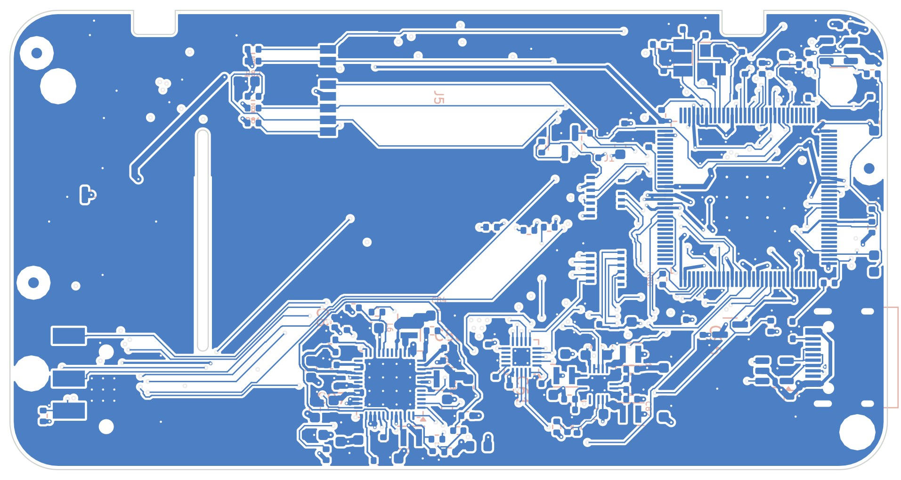
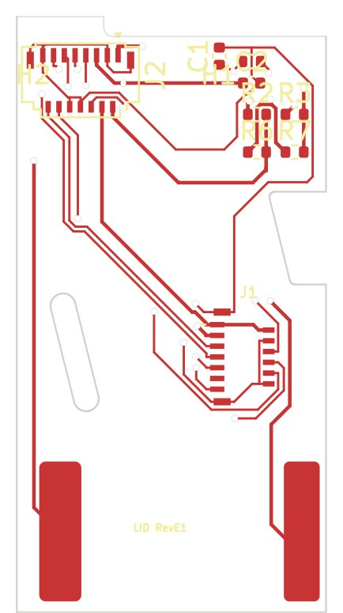
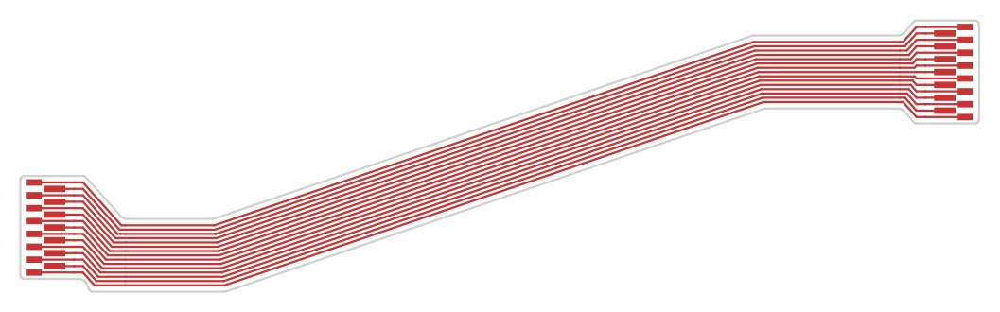

Build log / Oct 25, 2026
Inside the boards
While waiting for the Beta boards, I wrote up the hardware properly. This post is the short version: what's on the boards, how they talk to each other, and a few decisions that shaped them.
Three boards
| Board | Size | Job |
|---|---|---|
| Main board | 82 × 43 mm, 6 layers, 0.8 mm | Everything active: chip, power, buttons, bottom screen, audio, ports. 213 parts on both sides. |
| Lid adapter | 2 layers, 0.6 mm | Turns the top screen's cable and the speaker contacts into one 15-pin connector. |
| Hinge cable | 1 layer, 0.11 mm | 15 wires wound 2¼ turns around the hinge pin, so opening the lid to 170° never folds it sharply. |


Decisions that shaped it
- Two screens, two buses. Each screen gets its own SPI controller and its own tearing signal, so both refresh in parallel and in step with the panel. The screens keep their own picture memory, so a busy CPU never means a black screen.
- One chip with memory built in. The T113 has its memory inside the package and comes in a leaded package, so there's no BGA and no separate RAM chip to route. That keeps the board simple and cheap to assemble.
- Everything slow on one wire pair. The power chip, the 13-button expander and the touch controller all share one I²C bus.
- The lid carries almost nothing. Only the top screen, the speaker and a tiny adapter. Everything active stays in the base, so only 15 thin wires cross the hinge.
- The system knows when the lid closes. The Hall sensor goes to the power chip (to cut power as a last resort) and to the button expander, so the system can save first.


Power, measured
On the first prototype, a DS game on both screens drew about 1.1 W in total. With the 1200 mAh battery, that works out to an estimated 3.5–4 hours of DS play. It's an estimate until the Beta boards run on battery.